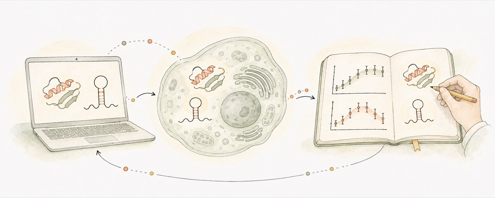

AI4Bio：预测之外，还得看什么证据

我以前在 X 上问过两个问题：AI 的 scaling 规律在生物学里还灵不灵？有没有落到产业里的案例？现在回头看，这两个问题还得拆细。把数据、算力和模型规模往上堆，哪类任务变好了，为什么变好，换个场景还管不管用，这几件事要分开问。
在生物学里，“条件”本身就占了问题的一大半。同一个分子，放到不同的细胞状态或体内环境里，模型的预测还算不算数？如果一换条件就掉链子，缺的可能是更多数据，可能是对实验条件更准的刻画，也可能是我们对底层机理就没摸透。我想看到的证据，得能把这几种原因分开。
预测改变了哪个决定
我关注 AI4Bio，主要看它能不能帮研究者更快做出靠谱的决定。找新靶点、分析数据、给老药找新适应症、定下一步做什么实验，每一环的分量都不一样。一股脑全叫“加速研发”，反而看不清是哪一步省了工夫。
比如模型挑出一个新靶点，科学家接下来拿什么判断它值不值得花几个月去验证？数据分析跑快了，还要看研究者是不是因此更早抓住了数据里的关键差异。模型给出新适应症或下一步实验建议时，要看它有没有改变团队原本的计划，后来的结果又支不支持这个改动。
这些没法用一个笼统的指标概括，得按任务分别拿证据。预测变准了，确实能缩小排查范围；但最后省没省时间、结果好不好，要看它进入真实决策之后发生了什么。
不同案例，回答的是不同问题
Arc 复盘 Evo 2 一周年的文章里，提到了对人类基因变异的评估。看这类结果时，我最想追问：模型从数据里学到了哪些可迁移的规律？放到没见过的背景里，预测还能保住几成准头？机构概览
OpenAI、PerturbAI 和 Scripps Research 用 Rosalind 重读了已有的小鼠脑细胞数据，挖出一批值得往下验的线索；Isomorphic Labs 则放出了 IsoDDE 挑出的分子在临床前实验里的活性数据。前者看的是“分析能不能挖出好问题”，后者看的是“算出来的分子做实验灵不灵”。两边都还没走到验证人体疗效那一步。Rosalind · IsoDDE
The Virtual Biotech 则是拿历史临床试验数据去研究靶点和结局，还专门复盘那些中途折戟的试验。这让我想到另一种反馈：以前失败的记录，能不能拿来修正原来的假设，或者帮老药指一条值得试试的新适应症？论文
案例里的证据走到了哪一步
看产业案例，我习惯把两件事拆开：AI 在前期干了什么，以及候选药物后面自己走到了哪一步。2025 年发表的 rentosertib 论文报告了一项 2a 期随机、安慰剂对照试验，入组 71 名受试者，为期 12 周。这是实打实的人体临床数据；不过长期的安全性和疗效，还要靠更大规模、更长周期的试验来确定。论文
这个案例让我想分清两层证据：临床结果说明的是药本身的表现；要证明 AI 提高了发现效率，需要另一套对照。比起急着贴上“大获成功”的标签，好案例抛出来的具体问题更值得琢磨。
往后做研究，我想把预测、假设和实验结果扣得更紧：一个预测暗示了什么机制，有什么证据撑着，换了条件为什么还成立，或者为什么失灵。scaling 吸引我的地方也在这里：它能不能帮我们多懂一点生物学，把下一步押得更有底气。